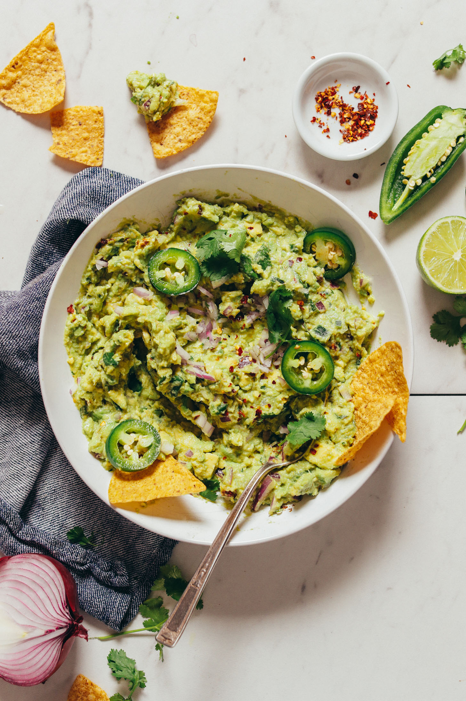

Guacamole

Incredibly creamy, flavorful guacamole ready in just 1 bowl, 10 minutes, and with 8
ingredients! The perfect dip
for Mexican night!
Ingredients
- 2 medium ripe avocados* (see tips for picking and storing avocados above in post)
- 1/4 cup diced red onion (or shallot)
- 2 Tbsp diced jalapeño, seeds removed (omit or reduce for less spice)
- 2-3 Tbsp lime (use lemon in a pinch!)
- 1/2 tsp sea salt
- 1 tsp ground cumin
- 1/8 tsp red pepper flake (omit or reduce for less spice)
- 1/4 cup minced cilantro (lightly packed)
Instructions
- Add avocado, onion, jalapeño, lime, salt, cumin, and red pepper flake to a shallow mixing or serving
bowl
and mash with a fork or potato masher.
- Add cilantro and stir. Then taste and adjust flavor as needed, adding more lime (or lemon) for acidity,
cumin for smokiness, red pepper flake for spice, cilantro for herbal flavor, or salt to taste.
- Serve immediately with chips or veggies of choice.
- Store leftovers well covered up to 2-3 days in the refrigerator, though best when fresh.
- To extend freshness, squeeze a little more lime juice over the top of the guacamole (to prevent
oxidation)
before storing.
- Make sure a lid or plastic wrap is touching the surface of the guacamole (this also helps prevent
oxidation).
- If the top appears slightly browned after storing, just scoop off the very top layer and the guacamole
underneath is usually fine!